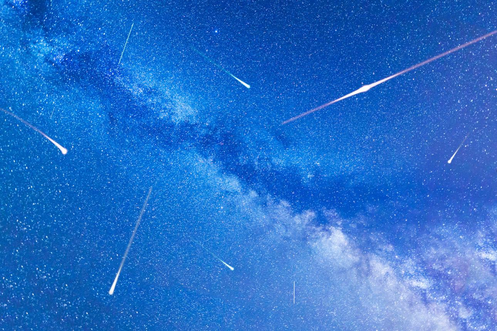

Los meteoros son fenómenos luminosos que ocurren cuando fragmentos de polvo o roca espacial entran en la atmósfera terrestre a gran velocidad.
Al entrar en contacto con la atmósfera, estos fragmentos interactúan con el aire y producen una intensa luz que puede observarse desde la Tierra. Son conocidos popularmente como estrellas fugaces.
Una lluvia de meteoros ocurre cuando la Tierra atraviesa una región del espacio que contiene partículas dejadas por un cometa o, en algunos casos, por un asteroide.
Muchas de estas partículas ingresan a la atmósfera y generan numerosos destellos luminosos que parecen provenir de un mismo punto del cielo.
El estudio de los meteoros permite conocer mejor los materiales que existen en el sistema solar y comprender cómo interactúan con la atmósfera de nuestro planeta.
